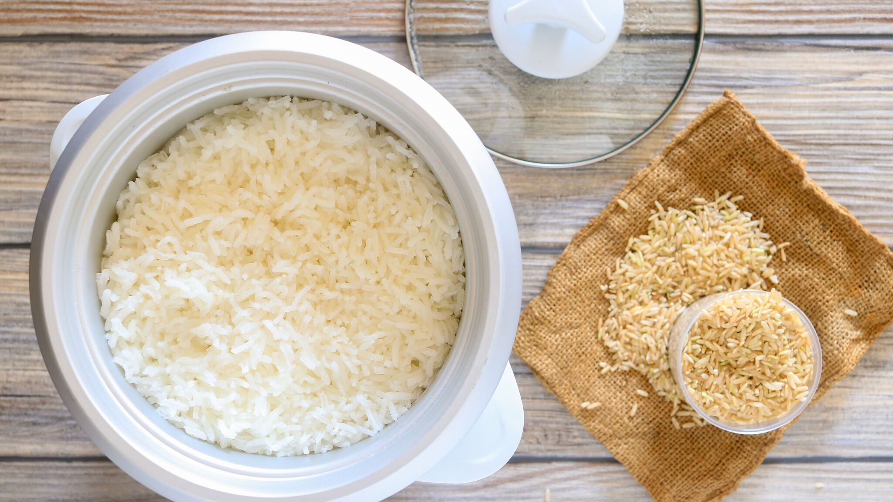

Rice with Rice Cooker

Description
Rice is a staple food in the Philippines and other Asian and African countries. This recipe will show you my way on how to cook rice using a rice cooker.
Ingredients
Steps
- Add your desired amount of rice grains in a pot.
- Wash the rice grains in lukewarm water.
- Drain the water.
- Repeat steps 2 and 3 for two to three times.
- Add water until the water is above the top of the rice grains.
- Add more water until the water level above the rice grains is at least 1/3 of your middle finger.
- Put the pot in the rice cooker and turn it to cook.
- Wait until it finished cooking and enjoy!
Return to homepage